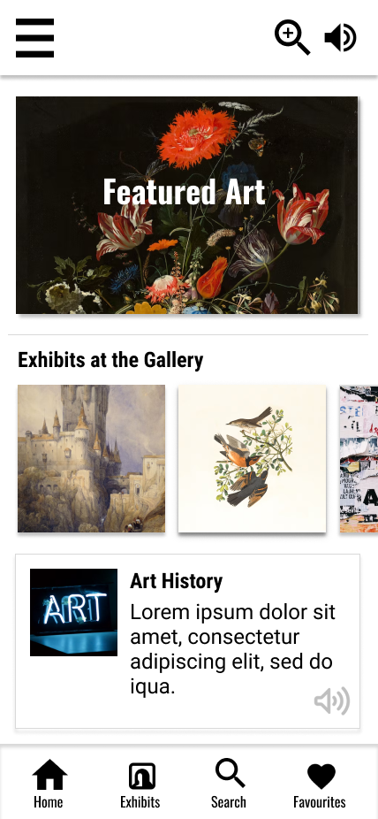
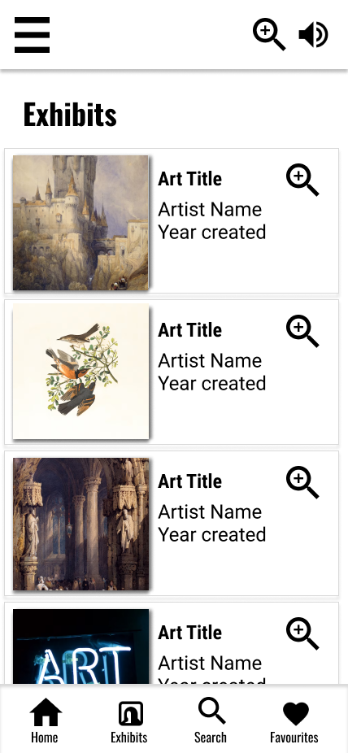
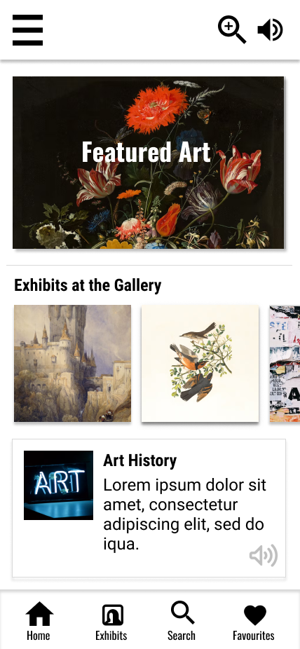
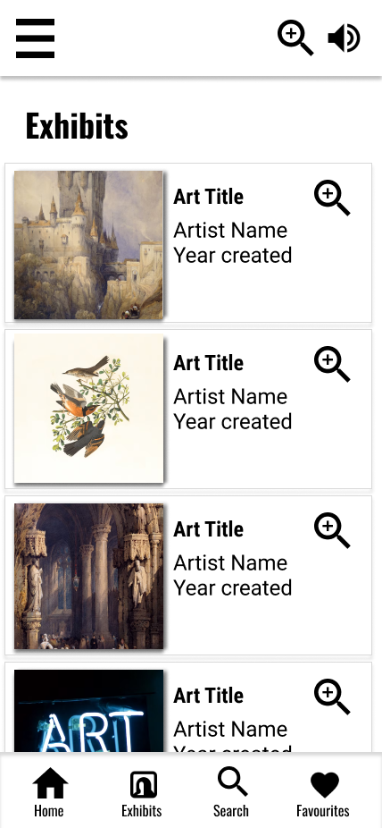
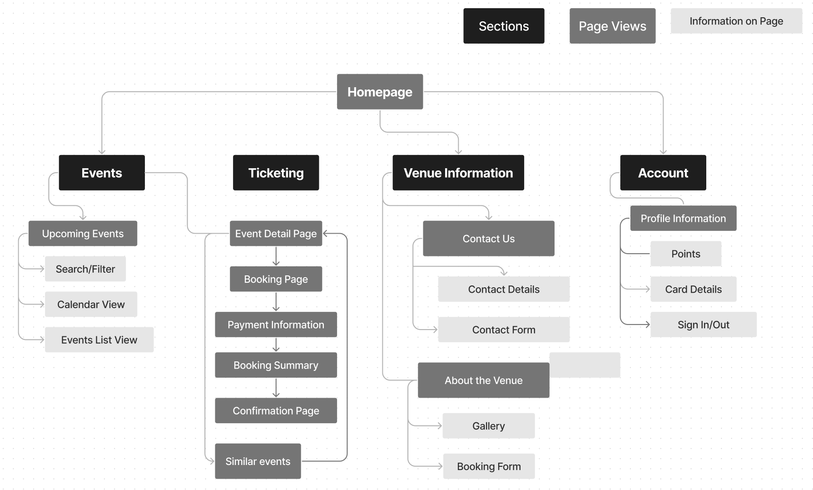
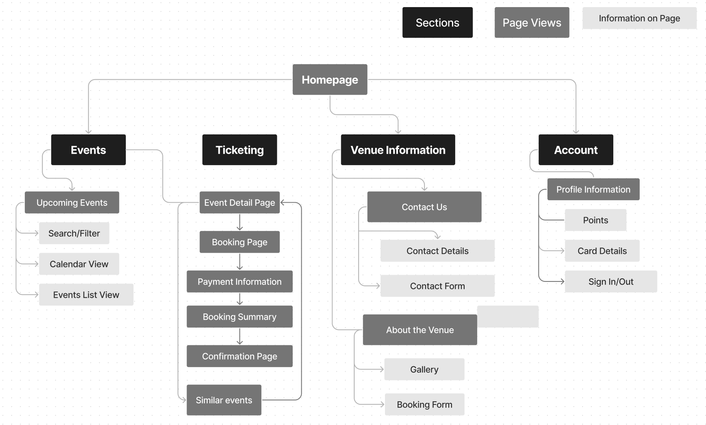

Prompt: Design a Simple App for an Art Gallery
Role: UX Designer. Conducted interviews, designed paper and digital wireframes, low and high fidelity prototyping, conducted usability studies, accounted for accessibility, and iterated on designs.
The Problem is art galleries and museums are not always accessible to those who are unfamiliar with art or require assistance. The Goal of this design was to provide a resource that allows all visitors to access the art and information in a way that is equitable.
Two of the primary user groups identified through creating aggregate personas, both were identified adults. The first group had schedules did not align with the gallery’s events and the second was users that felt excluded and unsupported at the gallery with the lack of inclusive signage or assistive technology.


 




Prompt: Ticketing Flow for a Music Venue
Role: UX Designer. Conducted interviews, designed paper and digital wireframes, low and high fidelity prototyping, conducted usability studies, accounted for accessibility, and iterated on designs.
The Problem Users often miss out on events, they can’t learn about the accessibility options, and find the ticketing flow to be painful. The Goal of this design was to design a ticketing flow that users will enjoy and find useful and informative of accessibility options.
I created personas and empathy maps to understand pain points and user's needs. Two of the primary user groups identified through creating aggregate personas, both were identified as adults. The first group found purchasing tickets online to be frustratingly complex and the second was users that felt excluded by the lack of accessibility information for events.

 

Career Coaching Responsive Site
Role: UX Designer. Conducted interviews, designed paper and digital wireframes, low and high fidelity prototyping, conducted usability studies, accounted for accessibility, and iterated on designs.
The Problem Users of this demographic have a difficult experience connecting with mentors and locating documents in one easy space. The Goal To develop a responsive, mobile first website that provides career coaching resources for formerly incarcerated persons. The aim is to build a site that is easy to navigate regardless of digital literacy rate and will provide mentorship access in a way that is not currently available.
I created personas and empathy maps to understand pain points and user's needs. Two of the primary user groups identified through creating aggregate personas, both were identified as adults. The first group found networking and mentorship access not readily available while the second found business advice and mentorship hard to access.